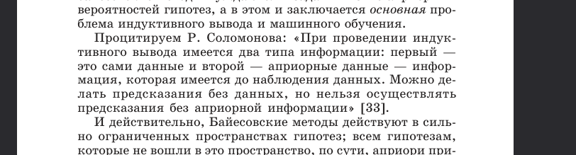
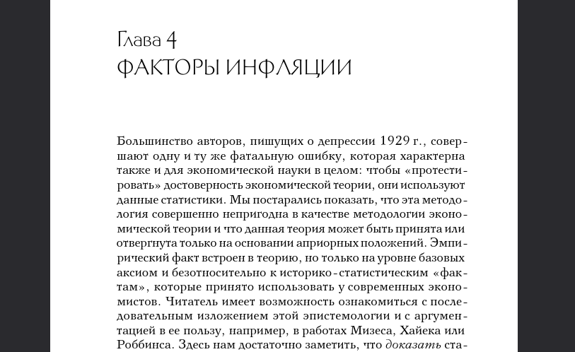

(no subject)
Jun. 6th, 2026 07:59 amКартинка для привлечения внимания.
Индекс S&P 500, 5 июня 2026 года
Чтобы заинтересоваться вопросом, достаточно заметить,
что здесь непрерывно происходят циклы
-- нега
-- лютый крах
-- нега
-- лютый крах
В 1913 году никто и не думал о такой вещи,
что может потребоваться защищать рыночную экономику.
В 1920 году здесь резали буржуев.
В 1926 году в США построили почти современную индустриальную
цивилизацию. Было царствие небесное на земле,
почти современная индустриальная цивилизация, с авто, тракторами,
удобрениями, радио и железнодорожной автоматикой современного
стандарта, все эти форматы U/x современных серверов совместимы.
И тут депрессия 30-ых.
И тут люди чуть ли не с голоду помирать стали.
Развал СССР. Жили в такой неге.
И тут сплошные 90-ые.
И все это вещи реально напрямую затрагивающие повседневную жизнь.
Циклы бум-крах и депрессии.
И всюду однотипное описание: жили так хорошо, так все было хорошо и
внезапно лютая депрессия.
И все внезапно.
И всегда есть большое количество людей в неге, которые до последнего ничего не подозревают.
Ну может хоть после очередного краха как-то базу начать латать?
Если уж до никак не получается?
Ведь достаточно заметить слово априорный в двух книжках.
Потапов А.С. Распознавание образов:
https://polytechnics.ru/shop/product-details/32-potapov-a-s-raspoznavanie-obrazov-i-mashinnoe-vospriyatie-obshhij-podxod-na-osnove-principa-minimalnoj-dliny-opisaniya.html
Если эта книжка непонятна, можно спросить любого программиста.
И Ротбард, Великая депрессия в Америке:
http://econlibrary.ru/books/276/435/rotbard_velikaya-depressiya-v-amerike_sotsium-ru.pdf
И есть ключ, связывающий эти две книги, понятный любому, кто понял книжку Потапова:
https://github.com/wieker/electrolyser/blob/master/docs/task3.pdf
Что вы видите на первом графике, вечную негу или лютый спад?
Абрамович Кирилл Константинович
Самара
также был известен как wieker на linux.org.ru
email:
wieker@gmail.com
kirill.abramovich@gmail.com
wieker0@yandex.ru
LinkedIN: https://www.linkedin.com/in/kirill-abramovich/
GitHub: https://github.com/wieker/electrolyser/blob/master/docs/task3.pdf
Телефон:
+7 901 943 73 41
https://transitional-writes.dreamwidth.org/
потенциально: https://mdl-induction.livejournal.com/
Индекс S&P 500, 5 июня 2026 года
Чтобы заинтересоваться вопросом, достаточно заметить,
что здесь непрерывно происходят циклы
-- нега
-- лютый крах
-- нега
-- лютый крах
В 1913 году никто и не думал о такой вещи,
что может потребоваться защищать рыночную экономику.
В 1920 году здесь резали буржуев.
В 1926 году в США построили почти современную индустриальную
цивилизацию. Было царствие небесное на земле,
почти современная индустриальная цивилизация, с авто, тракторами,
удобрениями, радио и железнодорожной автоматикой современного
стандарта, все эти форматы U/x современных серверов совместимы.
И тут депрессия 30-ых.
И тут люди чуть ли не с голоду помирать стали.
Развал СССР. Жили в такой неге.
И тут сплошные 90-ые.
И все это вещи реально напрямую затрагивающие повседневную жизнь.
Циклы бум-крах и депрессии.
И всюду однотипное описание: жили так хорошо, так все было хорошо и
внезапно лютая депрессия.
И все внезапно.
И всегда есть большое количество людей в неге, которые до последнего ничего не подозревают.
Ну может хоть после очередного краха как-то базу начать латать?
Если уж до никак не получается?
Ведь достаточно заметить слово априорный в двух книжках.
Потапов А.С. Распознавание образов:
https://polytechnics.ru/shop/product-details/32-potapov-a-s-raspoznavanie-obrazov-i-mashinnoe-vospriyatie-obshhij-podxod-na-osnove-principa-minimalnoj-dliny-opisaniya.html

Если эта книжка непонятна, можно спросить любого программиста.
И Ротбард, Великая депрессия в Америке:
http://econlibrary.ru/books/276/435/rotbard_velikaya-depressiya-v-amerike_sotsium-ru.pdf

И есть ключ, связывающий эти две книги, понятный любому, кто понял книжку Потапова:
https://github.com/wieker/electrolyser/blob/master/docs/task3.pdf
Что вы видите на первом графике, вечную негу или лютый спад?
Абрамович Кирилл Константинович
Самара
также был известен как wieker на linux.org.ru
email:
wieker@gmail.com
kirill.abramovich@gmail.com
wieker0@yandex.ru
LinkedIN: https://www.linkedin.com/in/kirill-abramovich/
GitHub: https://github.com/wieker/electrolyser/blob/master/docs/task3.pdf
Телефон:
+7 901 943 73 41
https://transitional-writes.dreamwidth.org/
потенциально: https://mdl-induction.livejournal.com/
no subject
Date: 2026-06-09 06:36 pm (UTC)от Протопопова, любовь как ее понимает зануда
до
биотической регуляции, биополитики, биоэтики и неисчерпаемого ресурса.
эти вопросы были известны ранее как попэтология и пикап.
теперь это, кажется, малоизвестно, но, возможно,
в той или иной форме эти размышления актуальны для многих и сейчас.
Если это цепляет,
то можно рассмотреть следующие вещи:
1. в сети тысячи met-art моделей из России и Украины.
2. но как их пофотографировать не понятно.
3. при этом многие девушки, вполне возможно, бы очень хотели подзаработать денег.
В чем дело?
Можно еще вспомнить, что fashion моделей еще больше.
Но их фотографий в том же качестве и количестве, как
met-art нигде не найти.
А ведь их было бы интересно и посмотреть и пофотографировать.
И девушкам многим было бы интересно срубить денег.
В чем дело?
Когда я пофотографировал одну такую модель https://t.me/s/alicelismagi
И задал ей эти вопросы.
Она исчезла со связи.
В чем дело?
Зацепка номер 2 - сам этот пост.
Просто тут есть три точки входа,
которые многих интересуют.
1. Это циклы бум-крах.
2. В той или иной форме выраженный вопрос политического устройства.
3. Строгая формальная естественнонаучная методология.
Если заметить, что одна из политических школ, дающих строгий ответ
на первые два вопроса, и, кажется только одна и никакая другая,
заявляет, что экономика априорная наука.
И если знать, что естественно-научная методология - это прежде всего
априорная наука, а затем уже опыт. То встает вопрос о соответствии
этой политической школы и естественно-научной методологии.
1. Говорят ли они об одном и том же?
2. Выводится ли АЭШ или нет из естественно-научной методологии.
Это прямо зацепка, с какой стороны не иди.
Зацепка N3
Рассмотрение колмогоровской сложности человеческого поведения.
Как можно сжать наблюдаеые потоки информации, например, в системе
распознавания образов для систем безопасности с IP-камер.
Насколько реально сложно человеческое поведение?
Какие его реальные базовые элементы?
Точное рассмотрение этого вопроса не должно исключать,
что реальная сложность человеческого поведения чрезвычайно
низка, хотя это и звучит как нечто невозможное для неподготовленного
человека.
Зацепка N4.
Связь оружия и базового естественно-научного образования.
Здесь все относительно просто.
- Электролиз хлората натрия - простейший электрохимический опыт.
- Проверка безопасности хлоратно-битумной смеси для пороха - теория трения и смазки.
- Сам процесс горения хлоратно-битумного пороха в цилиндре с поршнем - простейший тепловой двигатель.
- Детонация - это процесс горения в результате гидроудара. Пластинкой по хлоратно-
битумному пороху.
Но есть ли это в системе образования?
Ведь ээто же просто занятный способ рассмотреть несколько физических эффектов.
Зацепка N5.
Если подумал над зацепкой Н3 придти к выводу о низкой сложности поведения человека.
То можно допустить, что и сложность процессов в человеческом мозге относительно невелика.
А так как человеческий мозг это приемник и передатчик сигналов с очень низкй частотой.
То можно сделать систему радиоуправления, которая бы тем или иным образом контролировала
головной мозг. И ее сложность будет доступна для современных фабрик по производству микросхем.
no subject
Date: 2026-06-09 06:57 pm (UTC)Существует минимальная, с точки зрения МДО этика.
В качестве примера можно взять вопрос из зацепки Н1.
Что это - сюжет порнофильма или реальная проблема?
Ну и историческая часть.
Как и почему я столько работал над этими вопросами.
С чего начал, что побудило. И тд и тп.
no subject
Date: 2026-06-10 12:17 am (UTC)Ну раз уж мне так нравятся девушки.
И есть какие-то сложности познакомиться.
И раз такое впечатление произвела книга Протопопова.
И если вот есть сложность с собственной фотографией,
хотя по сути тут в некотором смысле только модели
деньги теряют и ничего кроме.
То можно хотя бы раздавать met-art.
Память эпохи. История.
Поэтому и торрентил.
Как бы это точнее выразить.
Сохранить на память. А то вдруг снова случится
Back to USSR. В смысле вот женской моды и тд и тп.
Не понимал тогда всего backstage.
Как бы это точнее выразить?
no subject
Date: 2026-06-10 12:20 am (UTC)включили какой-то fashion,
я хотя бы сохраню якорь на будущее.
Чтобы эпоха осталась навсегда хоть в хорошем фотодампе.
Так как барьер на вход для меня оказался непреодолим из-за
каких-то неведомых обстоятельств.
То просто торрентил met-art.
no subject
Date: 2026-06-10 12:25 am (UTC)- социализм точно глобальная проблема.
- инфляция тоже
- с метарт моделями, ну это надо спрашивать,
но что-то мне подсказывает, что они были бы не проч подзаработать денег больше
и что барьеры на вход этому только сильно мешали.
и не понятно, как это изменить. кто-то просто наживается на моделях?
куда Алиса пропала?
- к тому же постепенно тут снова какой-то Back in USSSR включили.
т.е. сажать и чмырить моделей, инфляция, социализм снова замаячили.
на этом фоне принял решение хоть met-art заблокчейнить в торрентах.
при дальнейшей редукции - это чуть ли ни еще одна простейшая этика.
сохранить спам метарта.
no subject
Date: 2026-06-10 12:34 am (UTC)типа - было.
no subject
Date: 2026-06-10 12:40 am (UTC)Back in the USSR.
в плохом смысле этого слова.
no subject
Date: 2026-06-10 12:41 am (UTC)- социализм точно глобальная проблема.
- инфляция тоже
- сажать и чмырить моделей
кто-то может про это не слышал.
no subject
Date: 2026-06-10 12:51 am (UTC)- то социализм.
- то инфляцию
- то девушки, вероятно желающие денег, но
висит груша - нельзя скушать.
и многим инженерам было бы это интересно
- то теперь очередная депрессия на носу тяжелая
- и тут еще радиоуправление стало распространяться.
ну так хоть сохранить на память - чего вы потеряли.
впрочем, это надо еще смотреть, останутся ли HDD в продаже :)
no subject
Date: 2026-06-10 12:52 am (UTC)реально, каким инженерам и студентам было бы это интересно?
no subject
Date: 2026-06-11 01:33 pm (UTC)1. Рассел-Норвиг
американские радиолюбители-либертарианцы.
то что у них, условно говоря, расстояние между Мизесами тоже мало
это добрый знак или нет?
если я хочу замкнуть перемычку, то мне бежать к ним или от них?
в Рассел-Норвиге очень чувтсвуется мультиагентность,
праксеология (он употреблял этот термин?)
и неорпделенность. планирование в условиях неопределенности
еще один источник.
есть в литературе
2. Протопопов и попэтология.
по сути, редуцируя,
можно сказать что это еще один источник.
что это?
врожденное?
приобретенное?
собственный продукт размушлений и индуктивной логики?
ведь обучение - есть процесс неопределенный.
обучающее множество или обучаемый?
кто делает выбор?
как найти на это ответ?
именно протопопов, Панов и тд и тп и стали еще одним источников.
как определить - это культура, животное или есть еще варианты?
индуктивная логика дает некоторй третий вариант - это неопределенно.
мир злобновато-неопределен.
некоторые простые, но злые частные случаи, видимо, слегка
смещают центр тяжести в сторону злобноватости,
но неопределенность перевешивает?
это недоредуцировано, но определенные намеки есть.
каков мир априорно? каков вес "дилемы залюченного" из теории игры?
априорный вес?
это уже третий источник, похоже.
есть ли четвертые источники, хм, поведения,
кроме врожденно-генетического
культутрного
индуктивного, т.е. разумного?
может быть квантовая механика это что-то четвертое?
ну тут я конечно о всяких теоретико-информационных интерпретациях
очень мало думал. понятно дело, а когда?
no subject
Date: 2026-06-11 02:02 pm (UTC)https://en.wikipedia.org/wiki/Solomonoff%27s_theory_of_inductive_inference
1. другой заключенный ненаблюдаем.
Что с ним, жив ли он, покалечен ли он.
Неизвестно.
2. А офицер, с которым ты говоришь, сам такой же заключенный.
Ни ты ни он не знают, что происходит за его спиной.
ну и если уж в злобновато-неопределенном мире действуют такие силы и процессы
то хотелось бы решить как минимум простейший частный случай.
запечатлеть мое обучающее множество в истории
одноклассниц, одногруппниц, самарчанок
русско-украинских метарт моделей
Таню
сохранить хотя бы фотографии на память.
это простейшая задача, от которой по мере
сил можно двигаться дальше.
для того и придумали BitTorrent.
no subject
Date: 2026-06-11 03:29 pm (UTC)1. не бойся не верь не проси и бойся проси и верь
что правильно?
2. что такое добро?
когда кормят?
или учат самому добывать себе еду?
прямо помню этот тред на ЛОРе. также alenacpp.
это же фолклор.
3. что верно, если тебе предлагают прайс за чью-то голову?
- взять прайс себе, а про имя головы мне послышалось. так сынтерпретировал, вообще чел не при делах.
- чел при делах походу. надо взять прайс и поделиться с ним, а то нечестно как-то
no subject
Date: 2026-06-12 08:03 am (UTC)- хочет ли русско-украинская мет-арт модель на картинке денег?
- если да, почему ее непонятно как пофотографировать?
- если нет, почему ее фотки продаются?
в конечном счете, если нет, то те же самые вопросы.
как минимум у нее бы просто прибавилось бы денег.
что в этом плохого?
кстати, а что про использование мет-арт фоток в образовании студентов?
неужели это может быть неактуально?
no subject
Date: 2026-06-12 08:11 am (UTC)no subject
Date: 2026-06-12 08:42 am (UTC)экономического расчета Мизеса.
1. если есть красотка, которая хочет подзаработать какой-то выгоды
со своей внешности.
много вкладывает в свое тело. занимается танцами.
выполняет вредные для здоровья процедуры.
2. то если она не знает
https://en.wikipedia.org/wiki/Solomonoff%27s_theory_of_inductive_inference
т.е. что этот мир злобновато неопределен.
т.е. если ей четко не платят
за внешность.
то ей отвечают неопределенностью.
ханжи и завистники будут ей вредить, за то, что она такая штучка.
фанаты будут помогать.
результат будет злобновато-неопределен.
априорно он не будет отличаться от результата ботанички-уродки.
просто для многих реакция инвертируется.
а для злобноватых останется той же.
но ботаничка уродка-может достичь лучшего.
так как она ближе к базе
https://en.wikipedia.org/wiki/Solomonoff%27s_theory_of_inductive_inference
рискну предположить, что чем ближе к базе, даже не зная всей картины,
в злобновато-неопределенном мире результаты будут лучше.
это предположение.
3. ежели красотка, не оставила желаний подзаработать денег.
и при этом не хочется двигаться к базе, путем
ботанички-уродки.
то ей нужно брать деньги,
сниматься в мет-арт за деньги.
иначе результат будет только лишь злобновато-неопределен.
это серьезная вещь,
в силу того, что для меня это Opus Magnum,
а не кривляния в угоду кому-то, оставлю пометку:
думающие люди должны все перепроверять сами.
но я не встречал тех, кто рассказывает такие вещи.
no subject
Date: 2026-06-12 08:45 am (UTC)но оно основано на том предположении, что общую теорему можно вывести путем
наблюдений частных случаев.
по видимому для кого-то это гром.
ну тут я еще не совсем уверен.
но могу привести доводы за.
no subject
Date: 2026-06-14 04:37 pm (UTC)FPGA + RF AFE + машинное восприятие или распознавание образов.
1. Процессы в нейросетях, что животных, что человека, включают в себя протекание низкочастотных токов.
2. Эти токи можно и уловить и индуцировать.
Электромагнитные импульсы низкой продолжительности могут проникнуть сквозь слой электролита.
Кроме того крайне низкая частота позволяет легко проникать сквозь диэлектрики и электролиты.
Их толщина несоизмеримо меньше длины волны.
Волны с крайне низкой частотой можно принимать и отправлять, если импеданс антенны и приемника
matched и очень мал даже на ультракороткие антенны.
3. Можно начать эксперименты с очень простых животных.
Будет ли червяк корчиться.
4. Затем можно перейти на животных со зрением и попробовать распознавать
принятые радиосигналы чем-то вроде OpenCV. Только вместо IP-камеры использовать
данный RF сенсор в качестве AFE.
5. Кстати, еще вопрос для ваших студентов — а им было бы интересно пофотографировать
русско-украинских met-art моделей?
На сайтах вроде metart.com тысячи и десятки тысяч девушек из Украины и России.
Многим инженерам было бы интересно пофотографировать их.
А многим девушкам бы очень хотелось бы улучшить их материальное положение.
Кроме того можно сделать фотосет для обучения студентов распознаванию образов и
машинному восприятию.
Что скажете?
also about this: https://transitional-writes.dreamwidth.org/44695.html
no subject
Date: 2026-06-14 04:39 pm (UTC)почему никого не волнует судьба тысяч и десятков тысяч метарт моделей из России?
за 20 лет накоплены дампы фотографий.
почему никому не хочется мохранить это для истории? фотки самарчанок?
почему всё улетает черным? и они рубят на этом бешеные деньги?
no subject
Date: 2026-06-14 04:39 pm (UTC)для RF AFE видятся следующие проблемы:
1. электролит.
но для волн с большой длиной волны он проницаем?
если толщина электролита много меньше
длины волны
2. размер антенн,
но если импеданс подобран корректно,
эффективность антенны не зависит от
длины волны
3. выбор конкретных нейронов из множества,
но это beam forming и oversampling
есть ли ещё какие-нибудь проблемы поуправлять
червём?